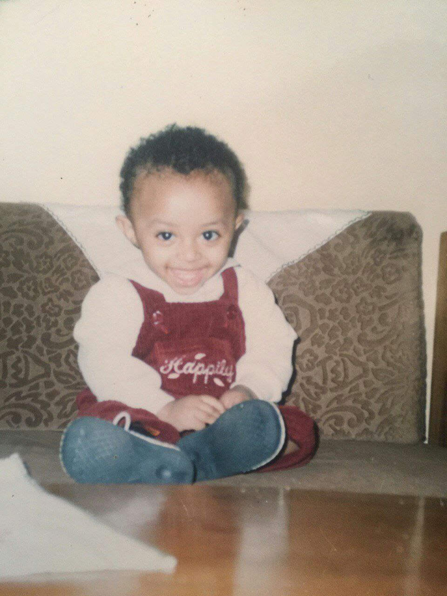
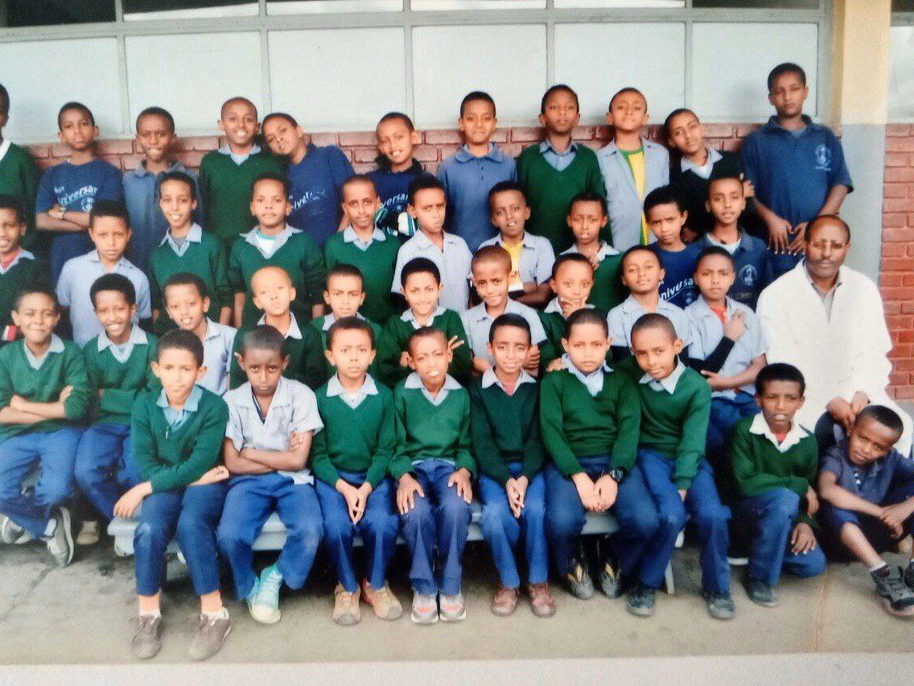
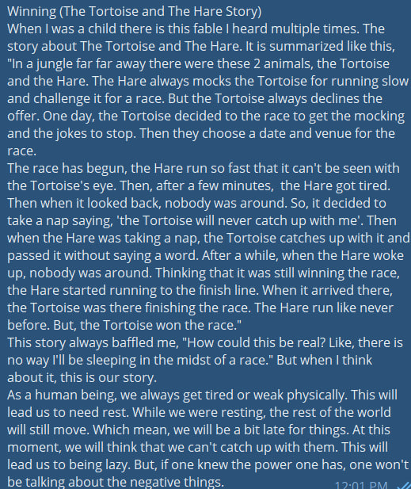

CHILDHOOD
1995-2002

2003-2008

During this time, I was a student at LCCS. Then, I got sick twice. In the summer of 2005, I got my appendix out. Then, in the winter of 2007, I got diagnosed with Hepitites B. I was at home for 2 months and returned back to school. It was hard to get back on track, but I had to put more effort than usual. I also was a member of several clubs like: Science club, Sport club, Chess club, Music club. I along with my friends did a lot for our school and won compitions for it.
2009-2013
In this period of my life, I finished my elementary school and joined high-school. I met amazing friends, started a business learned a lot. I also had a few bad relationships and/or friendships. At first, I dropped my school and forgot about it. Then, my parents told me that I need this and we discussed about it. Then, I went back to school. To be honest, if I could change one thing in life, I would change this part of my life.
HOBBIES
Reading
I love reading. I always have loved reading. Starting from childhood, I have read many books and magazines. My parents encouraged me to read and to get information from literary sources. I have read many types of books. From the books that I have read the most amazing ones are:
Making Music
Beginning from childhood, I wanted to play music so bad. So, I learned to play piano and guitar. Then, I started mixing music. Here is a sample music I made:
Video Editing
I have always wanted to be a professional video editor. I have thought myself from YouTube how to edit videos and tried something of my own. Here it is:
Writing

Because I read, I write. I have written and read in many occations. I have got many comments and it helped me a lot. So, I can say that I am a good writer. Here is something I wrote:
YouTube
In my spare time, I watch YouTube. I can say that I am a YouTube enthusiast. There are many YouTubers that I love and here are them:
Cars
I have always loved cars. I have been studying them.
| Car Brand | Car | Year |
|---|---|---|
| Toyota | Land Cruiser 105 | 2005 |
| Chevrolet | Impala | 1964 |
| Nissan | Patrol Platinium | 2019 |
| Toyota | Camry | 2002 |
| Toyota | Corolla | 2005 |
| Toyota | Carina E | 1992 |